Venne fatto erigere nel 1432 da Gregorio Camposampiero sul luogo dove sorgeva il noce sul quale Antonio si era fatto costruire una piccola cella per pregare e predicare. È uno dei santuari artisticamente più interessanti della provincia di Padova: un autentico scrigno di devozione e bellezza. La struttura esterna è semplice: la facciata ha un piccolo protiro, eretto ad inizio Novecento, che protegge l’affresco cinquecentesco della lunetta raffigurante la Madonna con il Bambino tra i Santi Antonio e Girolamo sopra la porta d'ingresso. L’interno è ad aula unica, con la zona absidale protetta da una cancellata, perché riservata al coro delle monache clarisse del vicino convento. La chiesa fu affrescata intorno al 1535, probabilmente da un affermato pittore padovano, Girolamo Tessari detto Dal Santo, anche se studi più recenti individuano nel coevo Gualtiero Padovano l’autore. Sulle pareti dell'aula dieci scene raccontano miracoli compiuti da sant'Antonio. La splendida pala d’altare, datata 1540, è opera del pittore veronese Bonifacio de’ Pitati.

La splendida pala d’altare che abbellisce l’abside venne realizzata contemporaneamente al ciclo di affreschi di Girolamo dal Santo ed è opera del pittore veronese Bonifacio de’ Pitati. Il dipinto, che rappresenta la Predica dal noce di frate Antonio davanti ad una schiera di fedeli, alcuni dei quali nobili e molti semplici abitanti del luogo, testimonia la capacità di Antonio di rivolgersi a dotti e a semplici venendo capito da tutti, perché il suo linguaggio va dritto al cuore. La scena, animata e colorata, è organizzata su tre registri entro un paesaggio prospettico ampio e profondo che sembra dialogare direttamente con lo spettatore: quello superiore in cui è raffigurata la Madonna col bambino; quello centrale con il Santo orante che indica il bambino, e quello inferiore con la folla accorsa ad ascoltarlo. Tra le figure ritratte si possono individuare alcuni personaggi dell’epoca in cui l’opera fu commissionata: il podestà del luogo, Ermolao Pisani, seduto su un prezioso tappeto e vestito con abiti ufficiali da cerimonia, e, in piedi quello che, probabilmente, è lo stesso committente della pala e degli affreschi, ovvero Girolamo II Camposampiero.
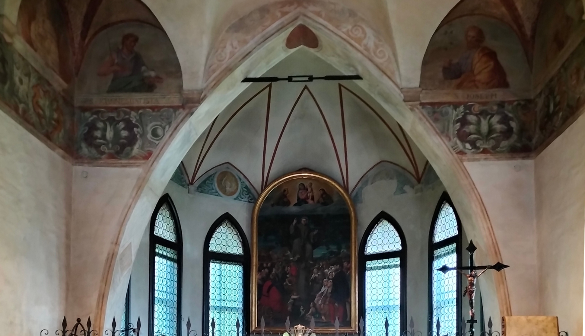L’Oratorio del Noce fu affrescato tra il 1535 e il 1537, probabilmente da un affermato pittore padovano, Girolamo Tessari detto Dal Santo, anche se studi più recenti individuano nel coevo Gualtiero Padovano l’autore. Sulle pareti dell'aula dieci scene raccontano miracoli compiuti da sant'Antonio. Volgendo le spalle alla porta d’ingresso, troviamo: sulla parete sinistra dall’alto in basso, da sinistra a destra
È uno dei miracoli più famosi di sant’Antonio di cui esiste una ricca iconografia. Nello spazio delimitato dalla semilunetta incontriamo dieci personaggi, ognuno con una sua funzione. In primo piano la mula che si inginocchia innanzi al Santo che le porge l’ostia consacrata, disdegnando la biada che le viene offerta dal giovane. Di straordinaria plasticità è il padrone col bastone in mano, nell’atto di percuotere la bestia. Sullo sfondo si intravvedono un palazzo e una chiesetta gotica. L’affresco fa riferimento a un episodio in cui un eretico sfidò il Santo a dimostrare la presenza di Cristo nell'ostia consacrata: egli avrebbe tenuto chiusa la sua mula a digiuno per giorni, poi l’avrebbe portata in piazza, mettendole davanti della biada. Allo stesso tempo Antonio avrebbe dovuto mettere l'ostia di fronte alla mula: se l’animale si fosse inginocchiato davanti alla particola, ignorando il cibo, l’eretico si sarebbe convertito.
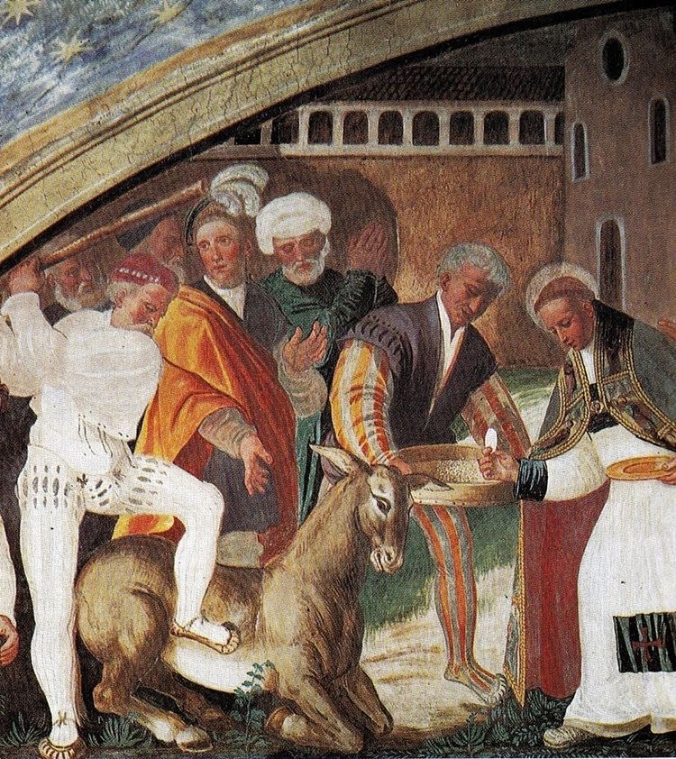L'affresco del miracolo dell'anello si trova nella parete di sinistra del Noce. Vi sono raffigurati, da sinistra a destra, tre momenti successivi della stessa scena: nel primo, un uomo sulla sponda di un veliero in mezzo al mare scruta preoccupato tra le onde dove gli è caduto un prezioso anello; nel secondo, incontriamo lo stesso personaggio all'interno di una chiesa mentre consegna ad Antonio e a un altro frate un grosso pesce; nel terzo, la scena si sposta nella cucina del convento dove l'anello perduto viene ritrovato all’interno del pesce. L'epigrafe spiega «Il santo ritrova la pietra preziosa che viene restituita al padrone in seguito a un dono offerto da costui». L’episodio rientra tra quelli che narrano guarigioni e interventi miracolosi a favore di singoli e famiglie.
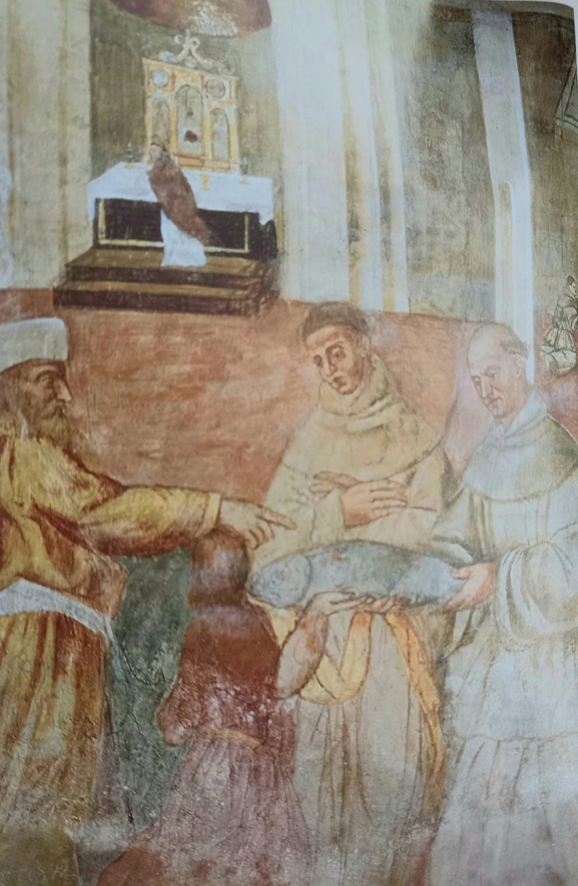L’affresco rappresenta uno dei miracoli inediti di sant’Antonio presenti solo al Noce. In primo piano, sulla sinistra, incontriamo il Santo mentre, dall’alto di un noce, che si presume sia quello sul quale poi sorse il santuario, predica al popolo. Sullo sfondo un campo seminato di grano. La gente, incurante dei danni che avrebbe arrecato al raccolto, per ascoltarlo aveva calpestato il campo. Grazie all’intervento miracoloso di Antonio le spighe si risollevano e il campo ritorna vigoroso. Il miracolo allude al problema della fame, terribile calamità ben nota agli abitanti del paese negli anni in cui fu realizzato il ciclo. L’origine di questo episodio, che rientra tra quelli che rievocano miracoli legati alla predicazione di Antonio, è da porre in relazione a quanto ci racconta l’anonimo francescano che scrisse nel 1232 la prima biografia di Sant’Antonio chiamata Assidua.
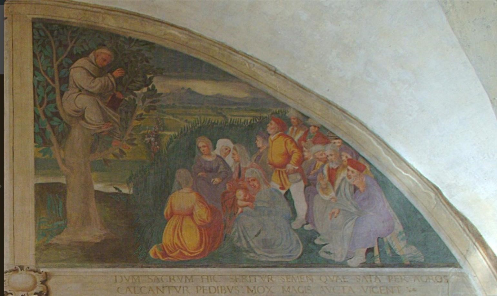La scena descrive il momento in cui sant’Antonio, parlando ad un’assemblea multilingue, si fa comprendere da ognuno nel suo idioma natio. L’allineamento frontale della teoria dei cardinali con al centro il Papa e le due ali di folla richiama in modo esplicito il Gesù tra i dottori della Scuola del Carmine. La mano di Girolamo è facilmente riconoscibile nella figura del Papa con i chierici mentre nelle altre figure, è evidente la mano di uno o più aiutanti. Sulla parete destra dall’alto in basso, da destra a sinistra
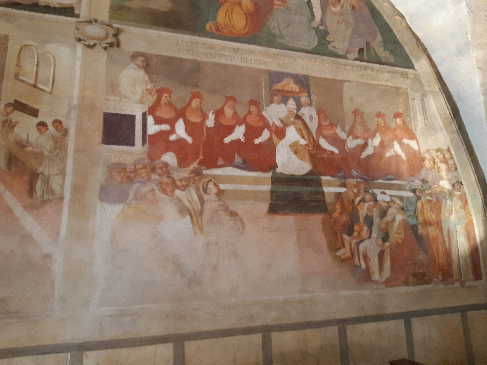Si tratta di uno dei miracoli più noti di sant'Antonio. La scena ritrae Antonio nell’atto di riattaccare il piede a un padovano di nome Leonardo. Costui aveva confessato ad Antonio di aver dato un calcio alla propria madre. Colto dal rimorso ed equivocando il rimprovero di frate Antonio, una volta tornato a casa si era reciso il piede. La notizia si era diffusa immediatamente per la città, arrivando anche all’orecchio della madre di Leonardo. Costei, visto il figlio così mutilato e saputane la motivazione, si lamentava, incolpando frate Antonio di aver istigato il figlio. Il Santo dopo averla calmata si recò nell’abitazione dello sventurato e congiunse miracolosamente il piede tagliato alla gamba, facendovi contemporaneamente il segno della croce. All’istante, il piede si riattaccò miracolosamente. L’episodio rientra tra quelli che narrano guarigioni e interventi miracolosi a favore di singoli e famiglie.
 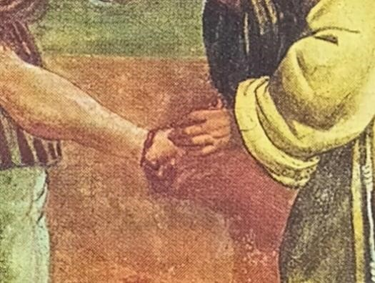
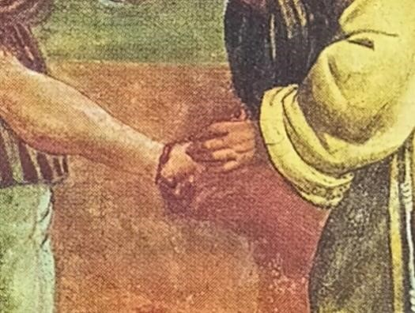
Vi è raffigurata una scena in cui Antonio partecipa ad un banchetto durante il quale gli viene offerto del cibo avvelenato che il Santo mangia, dopo averlo benedetto, senza subire alcuna conseguenza. L’ambientazione è essenziale: la stanza è disadorna. La luce proviene da una grande finestra oltre alla quale si intuisce un paesaggio collinare. Il repertorio iconografico è chiaramente preso in prestito dal tema de L’ultima cena. Sant’Antonio, tuttavia, non è raffigurato al centro della mensa, come il Cristo, bensì, in modo originale, in testa alla tavola, a destra, di profilo e non allineato agli altri commensali, quasi a sottolineare la sua distanza dal male, ovvero dall’inganno ordito a suo danno. Sulla stessa linea del Santo, all’altro capo della tavola, è invece la serva, persona umile, che nulla sa del complotto. Degna di nota la scimmia raffigurata in basso, ai piedi della tavola, incarnazione del male e del demonio, secondo la tradizione iconografica dell’epoca.
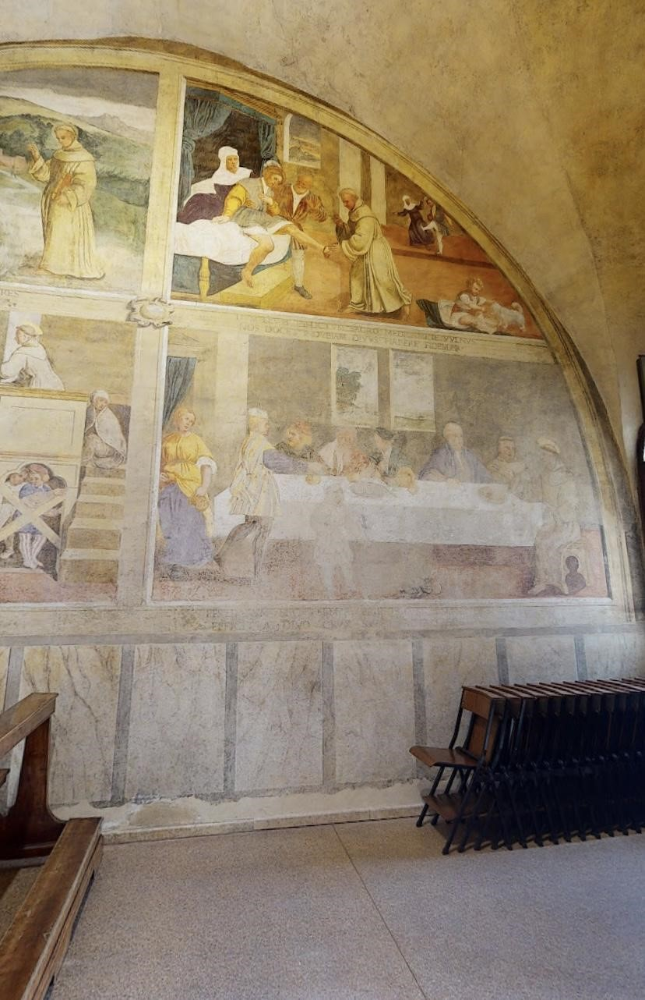L’affresco ritrae in primo piano Antonio in riva al mare e sullo sfondo Rimini e le colline dell’entroterra romagnolo. Mentre si trovava nella città, che a quel tempo era piena di eretici, Antonio iniziò a predicare senza ottenere ascolto, anzi venendo deriso. Allora il Santo si diresse verso il mare e iniziò a predicare ai pesci. Questi ultimi si radunarono dinanzi a lui sporgendo le teste fuori dall’acqua per ascoltarlo. L’evento miracoloso attirò l’attenzione dei cittadini e una folla si raccolse attorno ad Antonio che li esortò ad abbandonare l’eresia e a tornare alle vie del Signore. L’episodio rientra tra quelli che rievocano miracoli legati alla predicazione di Antonio.
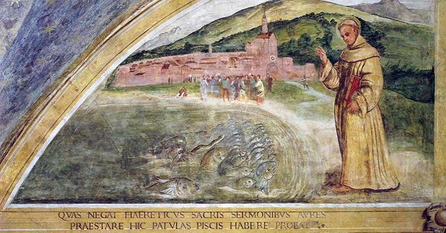È probabilmente l’opera più significativa di tutto il ciclo del Noce. L’episodio rientra tra quelli che narrano interventi miracolosi a favore di singoli e famiglie. Il miracolo racconta l’intervento di frate Antonio presso il marchese di Ferrara che, sospettando di adulterio la moglie, non intendeva riconoscere il figlio. Su invito di Antonio, il bimbo parla e si muove verso il padre, riuscendo così a “calmare le acque”. Ciò che colpisce è la vivacità della scena ed il grande numero di personaggi che la popolano, alcuni sfumati sullo sfondo, altri tipicamente descritti, come nel caso dei due bambini che giocano sotto al pulpito, alla madre in disparte avvolta nel mantello, timorosa di quanto sta avvenendo, agli uomini in abiti cinquecenteschi sulla sinistra, allo splendido gruppo di donne al centro della scena, avvolte da vesti rigonfie ricche di panneggi e trasparenze magistralmente rese.
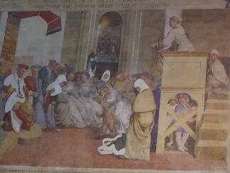Sulle semilunette sopra la porta d’ingresso A sinistra
Aleardino da Salvaterra, un nobile cavaliere che aveva sempre deriso i fedeli cattolici considerandoli ignoranti e ingenui, dopo la morte del Santo, giunse a Padova con la famiglia. Mentre era a tavola, gli altri commensali gli raccontavano con entusiasmo dei tanti miracoli operati da Antonio. Tutti affermavano che era veramente un Santo. Allora Aleardino, vuotato il suo bicchiere, disse: “Se colui che affermate esser santo farà restare intatto questo bicchiere, io crederò che sia vero quello che vi sforzate di farmi credere su di lui”. Ciò detto, lanciò con forza il bicchiere sul pavimento. Incredibilmente il bicchiere rimase intatto e si ruppero invece le mattonelle. Alla vista del miracolo il cavaliere si convertì e, accettata la sua devozione, predicò con costanza i miracoli.
 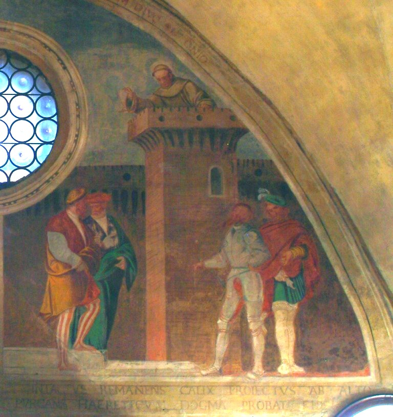
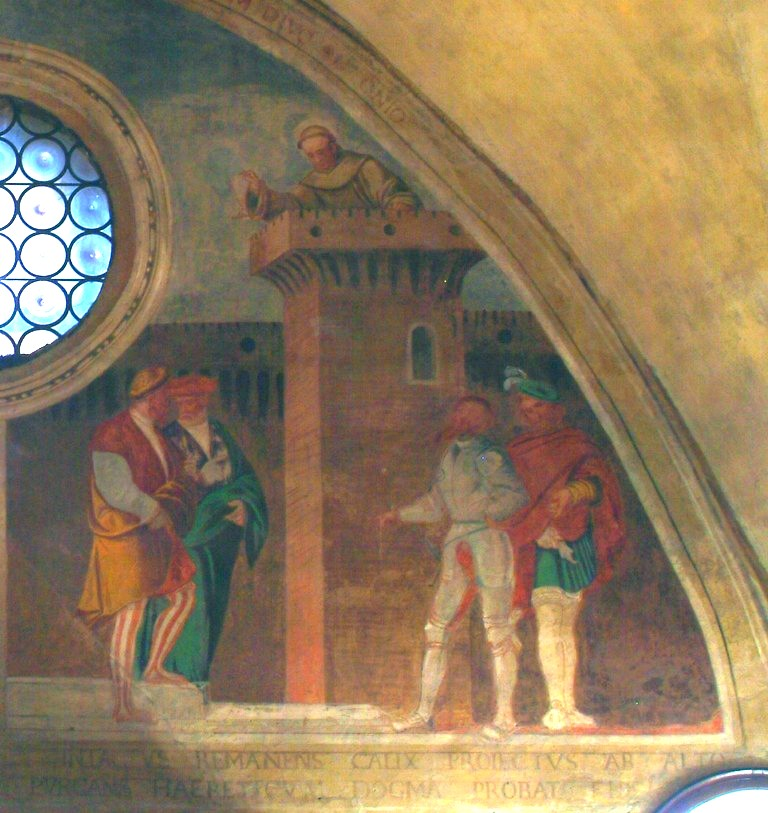
A destra
L’affresco rappresenta uno dei miracoli inediti di sant’Antonio presenti solo al Noce. Nessuna fonte storica parla di questo episodio. La scena ritrae, quasi in sequenza fotografica, una rovinosa caduta da cavallo. Il cavaliere cade dal bianco destriero mentre si raccomanda al Santo, raffigurato in cielo, sopra alla città di Venezia, in atteggiamento protettivo e benedicente. Grazie alla devozione il cavaliere viene liberato dai pericoli mortali e si salva. Il fatto che sant’Antonio appaia in cielo significa che si tratta della raffigurazione di una intercessione miracolosa post mortem. L’episodio, che pare alludere alla storia della famiglia “Camposampiero dal Leone” rientra tra quelli che narrano guarigioni e interventi miracolosi a favore di singoli e famiglie.
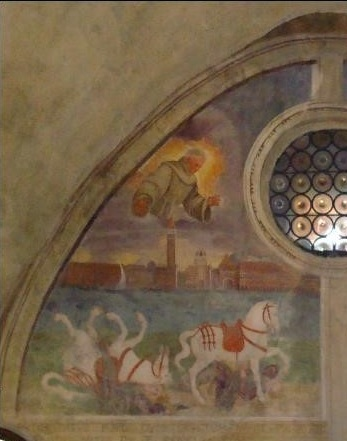